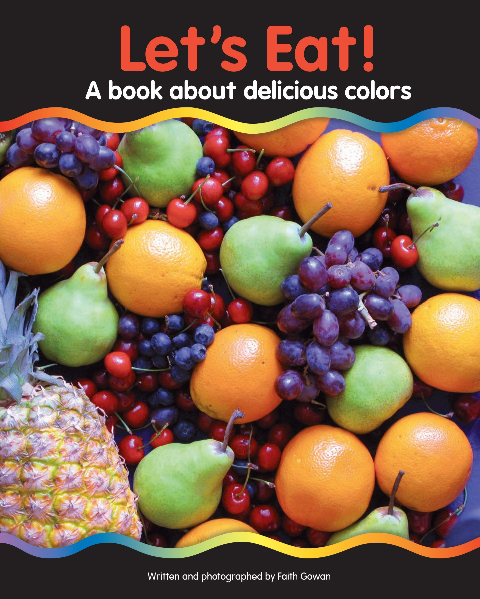

색깔과 과일에서 시작하는 영어 읽기
9월 초등 저학년 리영어 북 뮤지엄에서는 색깔과 과일을 함께 익힐 수 있는 《Let’s Eat!》을 읽습니다.
알록달록한 실제 과일 사진을 따라가며 빨강, 주황, 노랑, 초록, 파랑, 보라 등 색깔을 익히고, cherry, orange, pineapple, pear, blueberry, grape, coconut과 같은 친숙한 과일 이름을 자연스럽게 만납니다.
책은 "We have some red cherries.", "We have a green pear."처럼 짧고 반복적인 문장으로 구성되어 있습니다. 아이들은 그림을 보고 단어의 의미를 짐작하고 색깔과 사물이 결합되는 표현과 기본적인 영어 문장 구조를 자연스럽게 반복합니다.
책과 9월 학습의 연결
green + pear → a green pear → We have a green pear.
책에서 만난 영어를 읽는 데서 끝내지 않고 다시 스펠링과 문장 만들기로 연결합니다.
읽은 영어를 내가 쓸 수 있는 영어로.
9월의 책 보기 · 다운로드 《Let’s Eat!》 PDF · Google Drive